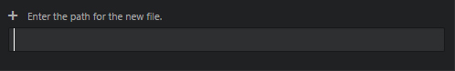

Lesson 1 :: HTML
網頁英文叫Hyper Text Markup Language，簡稱HTML，是文字檔。BULLSHIT啦！誰要知道這種事？
我是Mentor Jesse(自稱)，我不會長篇大論教你寫網頁，我只要用最精簡的方法去迫你學會建立自己的網站。
但這個遊戲開始前，先要大家準備以下的東西：
- 電腦一台 WIN 7/8/10 或者 MAC (如果無，請自掛東南枝)
- 安裝XAMPP v5.6.x 版本 (Download)
- 下載ATOM (Download) / NOTEPAD++ (Download)
- 安裝CHROME / FIREFOX，寫網頁唔講IE
Mentor Jesse主要會以ATOM作講解，不要問Dreamwaver可不可以，可以的，別廢話，你有錢便買個Dreamwaver來用吧！
STEP 0
安裝XAMPP
最主要是安裝 Apache 及 MYSQL Database，安裝完成後你可以從安裝路徑內找到 X:\xampp\htdocs\，Mentor Jesse強力建議大家將htdocs設成桌面捷徑或標籤為常用，這樣便不用每次煩複進入存放檔案的位置。
先不要心急，香港人心急我知道！先從電腦中開啟 XAMPP視窗，並將第一及第二個選項啟動
開啟ATOM
ATOM.EXE下載後可以放到其他位置，它不用安裝，但首次啟動需時，如果你移除ATOM.EXE便不能再開啟程式。
安裝NOTEPAD++
NOTEPAD++安裝後可以裝其資料夾整個放入手指或其他地方內，容量細，不佔資源。
ARE YOU READY?
STEP 1
建立PROJECT資料夾，引入ATOM
先進入X:\xampp\htdocs\，然後自己定義一個新資料夾的名字，例如 "web"
資料夾的名字不要用任何大階字母、空白鍵及中文字在內，玩死自己無謂啦！
從ATOM將建立的資料夾引入
方法一：
MS WINDOW : File > Add Project Folder
MAC : Atom > Add Project Folder
方法二：
將資料夾直入拖入ATOM LOL
STEP 2
建立index.html
從ATOM左邊的樹表中，指著資料夾Right Click滑鼠，點擊 "New File"並輸入 "index.html"

STEP 3
HTML的基本編碼
首先你要知道HTML的基本構成式才能寫下去：
- <!DOCTYPE html>
- <html>
- <head>
- <meta charset="UTF-8" />
- <title>KUROSU'S Web Tutorial</title>
- </head>
- <body>
- <h1>Hello HTML!</h1>
- <p>I am learning the HTML now!</p>
- </body>
- </html>
STEP 4
檢視你寫的東西
開啟 CHROME 或 FIREFOX，在網址列內輸入 localhost/web/index.html
之後你看見甚麼?
<tag>
HTML是由一堆 tag 組成，每一個 tag 都有各自的意思，同時它們都有自己的表達方法。
- <h1></h1>
- <p></p>
- <div></div>
- <ul></ul>
- <ol></ol>
- <li></li>
- <header></header>
- <footer></footer>
- <section></section>
- <nav></nav>
- <img src=”” />
- <hr/>
- <br/>
- <input />
- <meta />
找到它們的差別嗎?大部份的 tag 都是以一組包著內容，但也有些 tag 只要一個便能在HTML表達出來。
現在我們來解釋以上的 tag 的用途：
- <h1></h1> - heading(標題)，大至小由h1至h6。
- <p></p> - paragraph(段落)，包著文字或圖片。
- <div></div> - division(分區)，多數用來分隔HTML各部份及CSS附加效果。
- <ul></ul> - unordered list(不排序清單)，文字前會列出圓點。
- <ol></ol> - ordered list(排序清單)，文字前會列出 1,2,3,4...。
- <li></li> - list(清單)，於 <ul> 及 <ol> 內使用。
- <header></header> - (頁首)，HTML5新增 <tag>，區分網頁結構會更清晰及方便設定CSS。
- <footer></footer> - (頁尾)，功用同上
- <section></section> - section(部分) 跟 <div> 相似。
- <nav></nav> - navigation(導覽)，可用作網站MENU及網頁位置識別。
- <img src=”” /> - image(圖片)，"src"是attribute(屬性)的一種，不同的 <tag>有不同的attribute配合使用，"src"在這裡是存取圖片的位置。
- <hr/> - horizontal reference(水平線)，分隔文字段落用。
- <br/> - line break(下一行)，與段落不同，<br/> 用於文字與文字或圖片之間，同一段但不同行，例如歌詞。
- <input /> - (輸入)，於 <form> 表格內使用的元素。
- <meta /> - 屬性提供網頁標頭，於 <head> 內使用，設定於search enginee更容易辨識及讀取其內容。
<p> & <br/>
歌詞是一個很好的例子：
- <p>
- Nobody knows who I really am<br/>
- I never felt this empty before<br/>
- And if I ever need someone to come along<br/>
- Who's gonna comfort me, and keep me strong
- </p>
- <p>
- We are all rowing the boat of fate<br/>
- The waves keep on coming and we can't escape<br/>
- But if we ever get lost on our way<br/>
- The waves would guide you through another day
- </p>
顯示結果：
Nobody knows who I really am
I never felt this empty before
And if I ever need someone to come along
Who's gonna comfort me, and keep me strong
We are all rowing the boat of fate
The waves keep on coming and we can't escape
But if we ever get lost on our way
The waves would guide you through another day
<img />
放入圖片也是很基本要學會的一環，以下是存取別人家網站內圖片的例子：
- <img src=”http://i2.wp.com/aramajapan.com/wp-content/uploads/2016/06/aramajapan_kiminonawa-promo-e1464931569970.jpg?fit=639%2C659” />
以下是存取自己Project內的images：
- <img src=”images/kimi-no-namae-ha.jpg” />
TIPS: 從第一天便要養成的良好習慣
- /web/ - Project資料夾
- ├ /images/ - 放置圖片的資料夾
- ├ /css/ - 放置CSS的資料夾
- ├ /js/ - 放置JS的資料夾
- └ index.html